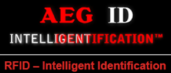

RFID 기술은 성장하는 다양한 시장에 진입하며 글로벌 보안분야 및 IT 인프라 구축에 혁신적인 영향력을 행사하고 있습니다. 이러한 전자 태그는 엑세스 제어 및 IT 보안분야에서부터 산업자동화, 물류시스템, 자산 추적 및 동물 식별에 이르기까지 다양한 응용프로그램에서 제품, 사람, 동물을 자동으로 식별하는데 사용되고 있습니다.
AEG ID: 세계 RFID 시장 진입을 위한 확실한 루트
AEG ID는 RFID의 광범위한 시장 및 응용분야를 위해 가장 포괄적인 RFID 태그 및 리더기를 제공합니다. AEG ID는 20년 이상의 RFID 장치 개발 및 제조 경험으로 거의 모든 주파수 대역 (저주파: <135kHz, 고주파: 13.56MHz)의 사양을 충족하는 맞춤형 태그 및 리더기 구성요소를 공급할 수 있는 역량을 갖추고 있습니다. 현재 AEG ID 제품은 산업 자동화, 생산 관리, 폐기물 처리, 물류관리, 출입통제, 동물 식별, 스포츠 타이밍, 이벤트 관리에 이르기까지 다양한 어플리케이션에 사용되고 있습니다.